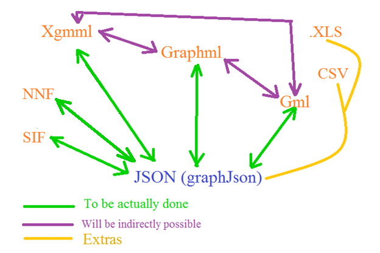
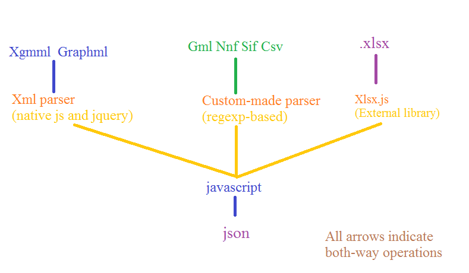

JavaScript JSON convertors for Cytoscape 3.0 file formats
The project title is: JavaScript JSON convertors for Cytoscape 3.0 file formats.
The idea is based upon suggested Idea 19: JavaScript JSON convertors for graph file formats, but I would like to drop the word “graph” from it, because this project will support virtually all formats accepted by Cytoscape 3.0 .
This project deals with the conversion of different graph and other formats used in Cytoscape 3.0 to Json used in cytoscape.js and vice versa.
Cytoscape 3.0 accepts file formats like xgmml, graphml, gml, nnf, sif, xls, sif, csv whereas cytoscape.js currently accepts only json representations of the data. It is not an easy task to create json representation of a required graph by hand. This is where this project comes in. I will develop some converters using JavaScript which will automate this generation of json representation.
The Cytoscape 3.0 file formats that will be supported are:
Xgmml, Graphml, Sif, Nnf, Gml (,Csv, Xlsx).
They are arranged according to their priority and so this is the order in which their json converters will be implemented. The last two (in bracket) will be kept as extras, meaning that they will be implemented only if the project is finished well before the deadline (see the timeline for details) .

Now, this is how I plan to deal with each of them.
1. Xgmml: This is the top priority format and hence will be dealt with first. Xml parsers available in native javascript and jquery will be used for parsing the xgmml file. Then some JavaScript code (using looping and if needed, regular expressions) will deal with the parsed xml file to convert them correctly into javascript variables and objects. Finally, they can be used to generate its json representation. (Maybe, take some inspiration from this library in Gremlin (written in java): https://github.com/tinkerpop/blueprints/wiki/GraphSON-Reader-and-Writer-Library )
This requires some separate functions which can:
· convert parsed xml to jS variables and objects
· create xml from given jS variables and objects
· save given jS variables and objects as json
· convert json into jS variables and objects
Guidelines for the conversion: <Note: See Possible hurdle 1>
1. Whether it is a “node” or a “edge” is represented by “group” in json. All its data is stored in the “data” object.
2. All the attributes of “node” or “edge” are converted to strings in json.
3. All the <att> tags of nodes/edges which are of type “real” are converted into numbers, “list” and “string” into their json counterparts.
4. The <att> tags without a “value” attribute are considered as objects and its sub-tags and attributes are considered as properties of that object. These sub-tags and attributes are then converted in accordance with the previous rules.
5. The <graphics> tag is considered as a json object named “graphics”. Its sub-tags and attributes are then converted in accordance with the previous rules.
Here’s some side-by-side comparison of xgmml format and its corresponding json form:
XGMML (https://github.com/bendtherules/GSOC_13/blob/master/Proposal/preview.xgmml )
<node
id="-331" label="YBR043C">
<att label="gal1RGexp"
name="gal1RGexp" value="0.454" type="real"/>
<att label="GO Cellular
Component" name="GO Cellular Component"
type="list">
<att value="cell"
type="string"/>
<att value="cell part"
type="string"/>
</att>
<graphics width="1"
fill="#fcfffd">
<att name="cytoscapeNodeGraphicsAttributes">
<att name="nodeTransparency" value="1.0"/>
<att name="nodeLabelFont" value="Default-0-12"/>
</att>
</graphics>
</node>
JSON (https://github.com/bendtherules/GSOC_13/blob/master/Proposal/preview_json_of_xgmml.json )
[
{ “data”: {
"id":"YKR026C",
"label":"YBR043C",
"gal1RGexp":0.454,
"GO Cellular
Component":["cell", "cell
part"],
"graphics":{"width":"1",
"fill":"#fcfffd",
"cytoscapeNodeGraphicsAttributes":{
"nodeTransparency":"1.0",
"nodeLabelFont":"Default-0-12"
}
}
},
"group":
"nodes"
}
]
2. Graphml: Graphml is also a xml-based format, so the implementation process is same as that of the previous one. Only the code will be different to take care of the syntax difference of these formats.
Conversion guideline:
1. Make use of the graphml – attribute values ( http://graphml.graphdrawing.org/primer/graphml-primer.html#AttributesValues ) to know the attribute type and the default values, if present.
2. All the “key” attributes in the <data> tags will be converted into json data of type “attr.type” (which are provided as graphml – attribute values )
3. Convert complex types ( http://graphml.graphdrawing.org/primer/graphml-primer.html#Complex ) into objects.
4. Support nested graphs (http://graphml.graphdrawing.org/primer/graphml-primer.html#Nested ) with the help of parent variable. (Might be a little complex, but surely do-able.)
[Side-by-side examples are not provided for this one, as they are pretty easy to understand. ]
Before I move on to the other ones, here is a small chart for reference:

3. Sif and Nnf: Very simple jS code needs to be written to take care of these file formats. There is already a python-based implementation of these converters (written by me) available at https://github.com/bendtherules/GSOC_13/tree/master/nnf_and_sif_to_json_py . Unlike the python implementation, network information in Nnf will be taken care of (stored in the “parent” variable in json).
4. GML: A custom-made parser needs to be built based on regular expressions (native js or possibly using xregexp library http://xregexp.com/ ). The rest of the plan is the same as that of xgmml, only this new parser will be used. As XGMML is the successor of GML, the conversion guidelines used in xgmml should suffice (only the idea of tags are not present here, everything is separated by space/tab).
Side-by-side example:
GML ( https://github.com/bendtherules/GSOC_13/blob/master/Proposal/preview.gml
)
node
[
id 0
label "YKR026C"
graphics
[
x 1916.0
type "ellipse"
fill "#E1E1E1"
]
]
JSON (https://github.com/bendtherules/GSOC_13/blob/master/Proposal/preview_json_of_gml.json )
[
{ data: {
"id":0,
"label":"YKR026C",
"graphics":{"x":1916.0,
"type":"ellipse",
"fill":"#E1E1E1",
}
},
"group":
"nodes"
}
]
Few words on the extras:
These extras will be done only if there is ample time left after the completion of the whole project, so there is no way that they will harm the main project. I am aware that new GSOC applicants like me tend to propose a lot more than they can actually complete, so I have tried not to fall in that trap. But these extras are here, because I plan to do them in the future, within or after GSOC. Also, as a side note, in future, I wish to release this codes as a separate jS library for converting customized-xml formats into json (I hope my mentoring org will allow this).
5. Csv: Use any well-documented csv parser and rest is the same.
6. Xlsx: **Potential License Issue** This is the most challenging part. I wouldn’t have tried this if there was no cross-browser external library to read and write xlsx format. But thankfully and quite surprisingly, there is one called Xlsx.js https://github.com/stephen-hardy/xlsx.js . I am not much sure if I can pull off this part, but I am still including this in the proposal mostly for my inspiration than anything else. Also, I know that the Cytoscape project originally supported .xls, but I think its best kept to Microsoft Excel for converting .xls into .xlsx .
1. Before June 17 :
o Learn more about:
o Jquery, xregexp, csv-parser, json, xlsx.js and the graph formats.
o Set up development environment
2. June 17 – July 6 (18 days): Implement xgmml converter
o June 17 – June 29 (12 days): Implement xgmml parser
o July 30 – July 5 (6 days): Rest of the converter
3. July 5 – July 7 (3 days): Test converter with different xgmml files.
4. July 8 – July 25 (18 days): Implement graphml converter
o July 8 – July 19 (12 days): Implement graphml parser
o July 20 – July 25 (6 days): Rest of the converter
5. July 26 – July 28 (3 days): Test graphml converter
6. July 29 (Mid-term evaluation): Deliver fully-implemented xgmml and graphml parser.
7. July 30: Take a day off from coding and analyze what went right and wrong in the first-term. (How about a blog post? :D)
8. July 31 – August 2 (3 days): Implement and test Sif and Nnf converter.
9. August 3 – August 20 (18 days): Implement Gml converter (First 12 days for the parser).
10. August 21 – August 23 (3 days): Test Gml converter
11. August 24 – August 27 (4 days): Put all the converters together and test them (Packaging).
12. August 28 – September 3 (10 days): Prepare documentation and add inline comments in the code.
13. September 4 – September 16 (13 days): Buffer time (If everything is working, work on the extras)
(Feedback will be obtained for all the converters from the community and they will be given more importance than the extras)
1. Json handler in Cytoscape.js might not be able to handle objects within the “data” section. If so, request the developer or send a patch to the core project so that it is supported.
2. Make sure the regular-expression based Gml parser is not buggy.
3. The input graph formats might not be well-formed (if manually created). (Maybe, add a xml-checker and discard non well-formed files. Such a checker might not be possible in case of non-xml based formats. )
· Yes, I am committed in working hard for the GSOC project this summer. I do not have any other commitment during the summer other than my college internals for the next session which should be held near the end of August or the start of September. I am not yet sure about the date, but I will ask for a one-week break during that time. I hope it won’t be much of a problem.
· Being my first GSOC project, I am also super-excited about it, can’t wait to have a fruitful summer this year.
· I wish to learn some more about the core Cytoscape project but as I am not a Java developer, I wish to linger with the Cytoscape.js project.
Name: Abhas Bhattacharya
Email: abhasbhattacharya2@gmail.com
Education: Passed High School, Ongoing B. Tech (1st year) in Aerospace engineering at BESU ( www.becs.ac.in )
Programming Languages of choice: Python, Javascript, C, C++, Java (little).
Related programming knowledge: Regular expressions, jQuery, Xml Parsing.
Prior experience with
open source development:
I have some experience in working with Git and playing around with forked projects, but didn’t really contribute in them.
Mostly, I am into game development, with python , gamemaker and javascript.
What do I want to
learn this summer?
It will be a great opportunity for me to contribute to a project like Cytoscape by developing these converters which should help end-users. Being mostly a hobby developer, I want to learn how to collaborate and code on real-life open-source projects.
Any
prior exposure to biology or bioinformatics?
Studied biology till the 10th grade.
Any
interest in learning a bit of biology this summer?
Sure. As I was asking around in the google groups, I would like to know more about the working of the core Cytoscape project and also a little biology, whenever required.
** End **